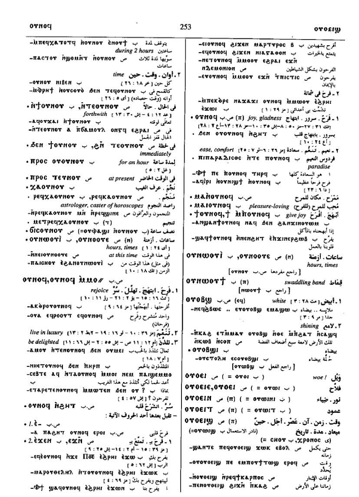

(noun female)
hour [ωρα, καιροσ]
(S, A, sA, B, F, O)
ⲟⲩⲛⲟⲩ
(S) plural: ⲟⲩⲛⲟⲟⲩⲉ
(sA) plural: ⲟⲩⲛⲁⲩⲉ
(B) plural: ⲟⲩⲛⲱⲟⲩⲓ
(S) plural: ⲟⲩⲛⲟⲟⲩⲉ
(sA) plural: ⲟⲩⲛⲁⲩⲉ
(B) plural: ⲟⲩⲛⲱⲟⲩⲓ
| (S) ϭⲓⲥ ⲟⲩ. | half-hour [ημιωριον]2592 | Crum: 484b | |||||||
| (S, F)
ⲛⲧⲉⲟⲩ.,
ⲛⲧⲉⲩⲛⲟⲩ
(sA) ⲛⲧⲟⲩ. (B) ⲛϯⲟⲩ. |
on the instant, forthwith [παραχρημα, παραυτικα, ευθεωσ]2593 | ||||||||
| (S)
ϩⲛⲧⲉⲟⲩ.,
ϩⲛⲧⲉⲩⲛⲟⲩ
(A) ⳉⲛⲧⲟⲩ. (sA) ϩⲛⲧⲟⲩ. (B) ϧⲉⲛϯⲟⲩ. (O) ⲉⲭⲉⲛⲧⲓⲟⲩ. |
as last2594 | ||||||||
| (S)
ⲡⲣⲟⲥ ⲧⲉⲟⲩ.
(A) ⲡⲣⲟⲥ ⲧⲟⲩ. (B) ⲡⲣⲟⲥ ⲟⲩⲟⲩ. |
for an hour2595 | ||||||||
| (S, sA)
ⲣⲉϥⲕⲁ
ⲟⲩ.
(B) ⲣⲉϥⲭⲁ ⲟⲩ. |
astrologer, caster of horoscopes [αστρολογοσ]2596 | Crum: 485a | |||||||
| ⲙⲛⲧⲣ., ⲙⲉⲧⲣ. | diviner's art2597 | ||||||||
| (S, F)
ⲧⲉⲛⲟⲩ
(S, A, sA, B, F) ϯⲛⲟⲩ |
now [νυν]2598 | ||||||||
| (S, A, sA, F) ⲧ. ϭⲉ, ϯ. ϭⲉ | so now [και νυν, νυν ουν]2599 | ||||||||
| (S) ⲉⲧ., ⲛⲧ. | as ⲧ.2600 | ||||||||
| (S, F)
ϣⲁⲧ.
(B) ϣⲁϯ. |
till now, at present [αχρι νυν]2601 | ||||||||
| (S)
ϫⲓⲛⲧ.,
ⲛϫⲓⲛⲧ.
(A) ϫⲛⲧ. (sA) ϫⲛⲛϯ. (B) ⲓⲥϫⲉⲛϯ. |
from now [ηδη, ετι]2602 | ||||||||
See also:
| view | (B) ⲁϫⲡⲓ | (noun male/female) hour, mostly with following numeral [ωρα]822 |
| view | (S, B) ⲥⲟⲩⲥⲟⲩ | (noun male) paint, atom, moment [στιγμη, ατομον]1515 |
| view | (S) ϩⲟⲧⲉ (A, sA) ϩⲁⲧⲉ (B) ϩⲟϯ (O) ⲟⲧⲓ, ⲁⲧⲉ | (noun female) hour, moment [ωρα]2295 |
| view | (S, B) ϣⲱⲡ (sA) ϣⲱⲡⲉ (F) ϣⲱⲡⲓ | (noun) moment, instant, c
ϩⲛⲟⲩ- suddenly [εν ατοιμω, προσ μιαν ροπην, αφνω]
as adj1950 |
| view | (S, sA, F) ϩⲟⲟⲩ (Sa, A, sA) ϩⲟⲟⲩⲉ (A) ϩⲱⲟⲩⲉ (B) ⲉϩⲟⲟⲩ (F) ϩⲁⲩ, ϩⲁⲟⲩ (Sf, F) ϩⲁⲁⲩ, ϩⲁⲁⲟⲩ (S, A, F) ϩⲟⲩ- {ϩⲟⲩⲙⲓⲥⲉ} (A, sA) ϩⲣⲉⲩ | (noun male) day [ημερα]64 |
Crum: 484,485

484

485
Dawoud: 252b-253a,
839a

252

253

839